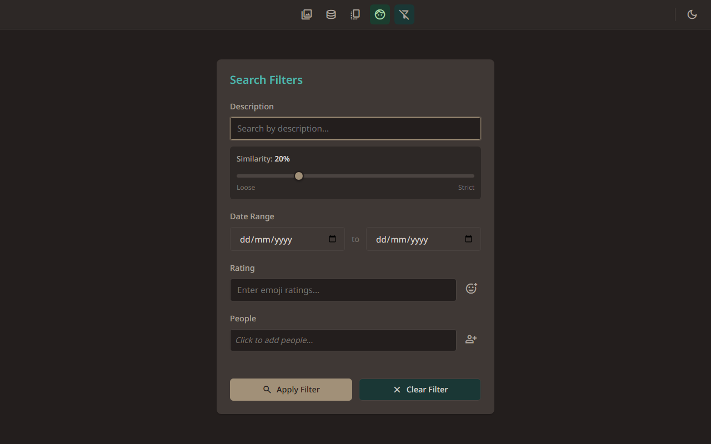
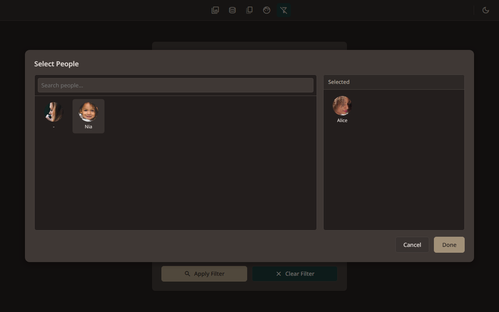
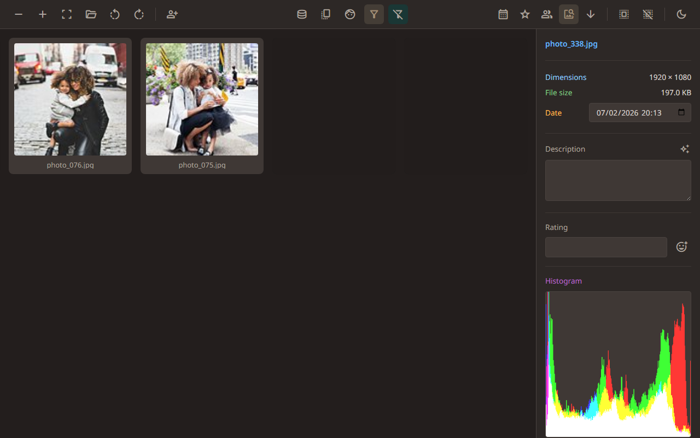
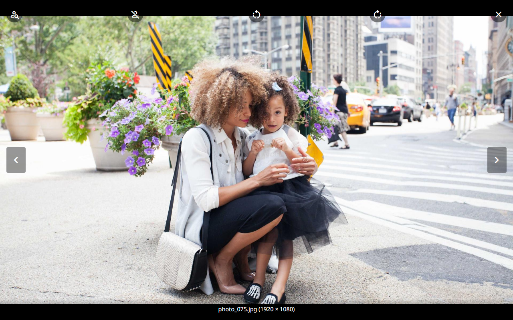
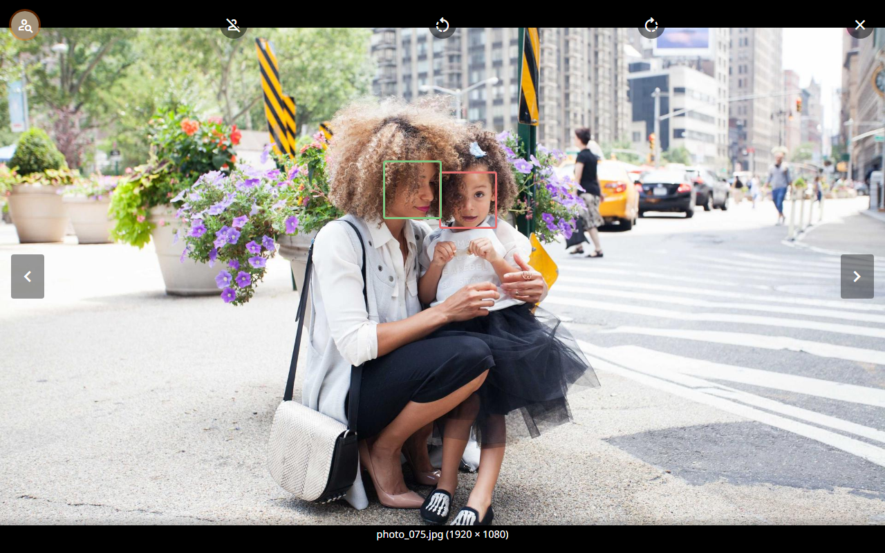
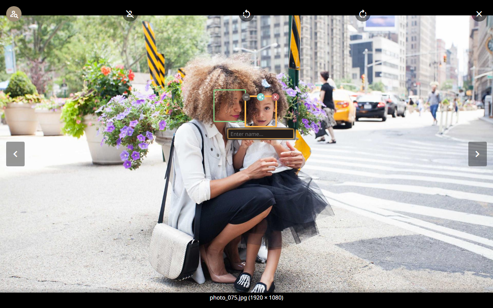
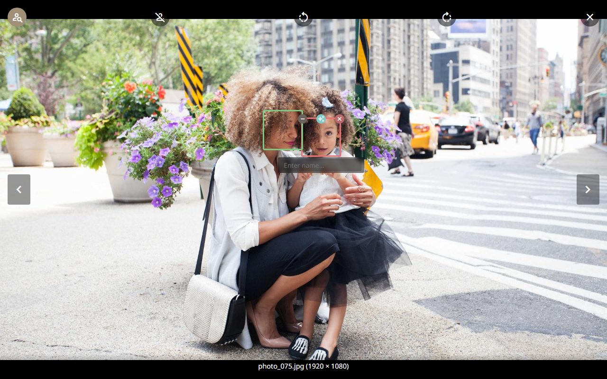

Face tagging in full-screen
← Back to contents
6.1. Opening Search

Let’s find photos of someone we’ve named. Click Search in the toolbar.
6.2. Opening the people picker

In the People section, click “Select people” to choose who you want to filter by.
6.3. The people picker dialogue

Select people by clicking them, or drag them between the lists. You can pick as many as you like.
6.4. Applying the people filter

Click Done, then Apply to see the results. The Gallery now shows only photos that contain Alice.
6.5. Opening full-screen

Double-click a photo to open it full-screen. We know this one has Alice in it because of our filter.
6.6. Enabling face tagging mode

Click the face icon to turn on face tagging. Coloured boxes appear around detected faces. Green means the face is named, red means it’s unknown, grey means ignored, and orange appears when you’re actively typing a name.
6.7. Naming a face in full-screen

Click any face to type or change its name, right on the photo. Autocomplete suggestions appear as you type.
6.8. Ignoring faces in full-screen

Hover over a face to see the same controls as the Faces screen. Click the grey minus to ignore, or the red X to remove a false detection.